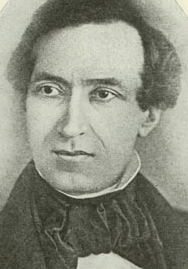
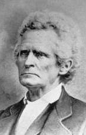
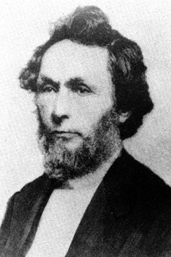

|
Abraham Lincoln's career as a lawyer began in the early
1830's, while he was serving as a clerk in a New Salem
general store, owned by Denton Offutt. In his spare time,
Lincoln would attend sessions of the local court, presided
over by corpulent justice of the peace Bowling Green. Always
looking to liven things up, Green would allow Lincoln to
comment informally on cases before the court, because he
told anecdotes that, as one contemporary recalled, produced
"a spasmotic [sic] shaking of the fat sides of the old law
functionary." In addition to entertaining, Lincoln impressed
the citizens of New Salem with his sharp mind, and presently
he began to prepare simple legal documents for people, such
as deeds an receipts.
Lincoln Goes to War
Lincoln's fledgling law career was put on hold for
several months in 1832, when he served as a militia captain
in the Black Hawk War, during which time he made the
acquaintance on John Todd Stuart, a Springfield lawyer who
served as a major in the same battalion as Lincoln.
Handsome, polished, and well-educated, Stuart was the
opposite of Lincoln in every way, but he saw great promise
in his New Salem friend. Returning from his brief period of
military service, Lincoln ran for the Illinois state
legislature. He entered the contest late, however, and was
defeated. Meanwhile, the Offutt store in New Salem had
failed. Thus, Lincoln found himself, as a friend put it
"without means and out of business."
At this point, Lincoln began to seriously consider a
career in law. He had been interested in the profession
since he was a boy, when he attended sessions of the local
court, and supposedly read a copy of the Revised Laws of
Indiana owned by the local constable. But, on further
reflection, Lincoln decided his education was lacking. At
the same time, Lincoln had an opportunity to purchase his
own store, in partnership with William F. Berry. Lincoln and
Berry seized upon the opportunity, going deeply into debt as
a result. The Lincoln-Berry store faced stiff competition
from the well-managed establishment of Samuel Hill and John
McNeil. Such stiff competition, in fact, that there was
rarely enough business to keep the partners busy. This gave
Lincoln plenty of time to read, and while he did not read
many law books, he did take the time to improve his grammar.
Eventually, in 1834, the Lincoln-Berry store went out of
business.
First Partner: John Todd Stuart
|

John Todd Stuart
|
As a result of the store's failure, Lincoln faced severe
financial pressure, pressure made far worse by the need to
repay the loans the partners had taken to purchase the store
in the first place. This pressure gave extra urgency to
Lincoln's second race for the state legislature, since the
salary paid to legislators was relatively handsome. He
campaigned fervently and was elected, as was his friend from
the Black Hawk War, John Todd Stuart. Lincoln began to
prepare for his new job by studying the law. His change of
heart came about for a variety of reasons; continued
exposure to the proceedings of the New Salem court, the
realization that the vast majority of lawyers were
self-educated, and the influence of Stuart, who offered to
help Lincoln in his studies. After making considerable
progress, Lincoln traveled to Vandalia, the state capital,
where he shared a room with Stuart.
During breaks from the legislature, Lincoln continued his
studies, reading the standard texts of the era: Chitty's
Pleadings, Greenleaf's Evidence and Joseph
Story's Equity Jurisprudence. Lincoln took his
studies very seriously, as his friend Henry McHenry
remembered, "He read so much-was so studious-took so little
physical exercise-was so laborious in his studies, that he
became emaciated and his best friends were afraid that he
would craze himself." In 1836, the capital of Illinois was
moved to Springfield, due mostly to the efforts of Lincoln
and his fellow New Salem representatives. On March 1, 1837,
Lincoln was granted a license to practice law. Shortly
thereafter, on April 15, Lincoln pulled up stakes and bid
farewell to New Salem. He moved to Springfield and joined
the practice of John Todd Stuart.
Lincoln's association with Stuart, a respected attorney,
immediately gained him the esteem of the Springfield legal
community. Unlike most beginning lawyers, who had to hunt
around for business, Lincoln began with a very full
practice, for Stuart was pursuing a seat in the U. S. house
of Representatives and turned over most of the business of
the firm to his junior partner. Their office was a single
room on the second floor in a group of buildings known as
Hoffman's Row, just a block north of the courthouse. It was
furnished only with a small lounge, a chair, a hard wooden
bench, a bookcase and a single table. Here Lincoln and
Stuart received clients, heard their complaints, and advised
what, if any, action was appropriate. If there was a
question of legal precedents, the partners could consult
their library, which consisted of a couple of volumes of
Illinois reports and some miscellaneous documents. It was a
meager resource, but at this time no law library in Illinois
contained more than 100 books.
Lincoln had to be careful to master the details of legal
proceedings, for even a minor technical error could cause a
client to lose a case. Fortunately, most of the cases
Lincoln handled early on were fairly basic, and required
more common sense than legal skill. Lincoln had a full load
of cases from the beginning, at the July 1837 term of the
Circuit Court, Lincoln and Stuart tried 26 cases, more than
twice as many as their closest rivals. Lincoln's practice
was not confined to Springfield, however. No lawyer could
make a living from the two-week terms that the circuit court
met in Springfield each year, and Lincoln, like most of the
other attorneys, traveled from county seat to county seat,
for sessions that lasted between two days and a week.
A full schedule did not mean full pockets, however.
Springfield had many lawyers, and all were obliged to charge
modest fees. Lincoln and Stuart usually charged between
$2.50 and $10.00, with an average of about $5.00.
Occasionally the partners were forced to take payments in
goods and services, once Stuart was paid with a custom-made
coat and another time Lincoln was given $6.00 worth of room
and board for his services. It was Lincoln's job to record
and collect all fees, which were split equally between the
partners. The firm was generally very successful, and
Lincoln was financially secure, if not rich. He soon
realized that, despite his lack of experience and his
informal training, he was more than a match for most of the
lawyers he faced. When Stuart left to take his seat in
Congress, Lincoln was confident in his ability to run the
firm alone, and he marked the date in his book:
"Commencement of Lincoln's administration 1839 Nov 2."
Second Partner: Stephen T. Logan
|

Stephen T. Logan
|
The years Lincoln spent in partnership with Stuart were
valuable for both men; Lincoln was able to refine his skills
as a lawyer and Stuart was able to focus on his duties in
Congress. However, when Stuart was reelected to the House of
Representatives in 1840, it became clear that he was not
going to be returning to the firm. The partners, whose
practice was in decline anyhow, saw no need to continue
their association and the partnership was dissolved. Shortly
thereafter, Lincoln joined the firm of Stephen T. Logan.
Nine years older than Lincoln, Logan was undoubtedly the
most skilled lawyer in Springfield, gifted with a sharp mind
and a thorough knowledge of legal precedents. However, he
also had a harsh voice and sharp countenance that often put
off juries. Logan turned to Lincoln to rectify this problem,
saying that "he would be exceedingly useful to me in getting
the good will of juries."
Logan had chosen his man well. Lincoln was expert at
maintaining a personal connection with jurors, seeming to
speak to each juror individually and in a conversational
tone. He rarely used technical language and was a master of
using homespun anecdotes to illustrate his points. Lincoln
also understood the importance of making an effective
closing statement. At the same time, and to Logan's
surprise, Lincoln improved himself from a technical
standpoint. Taking a cue from Logan, he improved his
knowledge of precedents and his mastery of technical
language. His growing mastery of the law was evident in his
increasingly frequent appearances before the Illinois
Supreme Court. Lincoln's care and thoroughness made him one
of the most successful attorneys in Springfield, and by the
time he stopped practicing law in 1861, Lincoln had appeared
before the highest court in Illinois over three hundred
times.
Lincoln learned a great deal in the time he spent with
Logan, developing from a lawyer with promise into a talented
litigator. However, his success did not lead to financial
well-being; he had by this time married and his increased
expenses were not easily met by the money he made as Logan's
partner, where he received a third of the firm's fees rather
than half, as he had received from Stuart. Lincoln also
realized that his political ambitions would clash with
Logan's, since both were pursuing a seat in Congress.
Finally, Logan's son David had been admitted into the bar,
and the two wanted to enter into partnership together. As
such, the partners amicably agreed to dissolve their
practice in 1844. The break was not an abrupt one, the
partners continued to appear together trough the end of
1845, and they continued to join forces on important cases
throughout the remaining years of Lincoln's career.
Third Partner: William Herndon
|

William Herndon
|
Lincoln entered into partnership with William Herndon, a
young lawyer that had studied with the Logan & Lincoln firm.
In this, Lincoln's final legal partnership, the roles were
reversed from his first partnership. Lincoln was the
experienced and respected lawyer and Herndon was the wet
behind the ears protege, full of promise but lacking in
experience. Like Stuart had done for Lincoln, Lincoln
generously granted Herndon half of the firm's fees. Herndon
not only developed into a skilled lawyer, but also into a
trusted friend and advisor.
Lincoln's choice of Herndon was not entirely magnanimous,
however. The Whig party of Illinois was divided into two
factions. The richer, more established faction was small in
number but had considerable wealth and influence. The other
faction, which included the majority of Whig voters, were
'self-made men'. Lincoln needed support from both factions.
His marriage to Mary Todd had given him connections to the
silk stocking element in the party, and Herndon gave Lincoln
respectability in the eyes of the populist element of the
party. Perhaps more significant than any of these
calculations, however, was that Lincoln genuinely liked
Herndon. He had respected Stuart and admired Logan, but for
neither of them did he have genuine affection. Toward
Herndon, however, he had an almost paternal feeling, and
Herndon, in turn, gave him unflinching loyalty. During the
long years that they were partners, Lincoln always addressed
Herndon as "Billy" and Herndon invariably called him "Mr.
Lincoln".
Lincoln and Herndon were in every way opposites. Lincoln
was tall, slow-moving and careless in dress. Herndon was
short, quick and something of a dandy, sporting kid gloves
and patent-leather shoes. Lincoln was melancholy, his moods
interrupted by periodic outbursts of humor, Herndon was
always upbeat and optimistic, but he had no sense of humor
at all. The senior partner disliked generalities, and his
mind moved slowly in logical procession from one fact to the
next, while the junior partner leapt ahead, using intuition
to arrive at his conclusions.
Lincoln's name drew clients to the new firm, and soon the
partners had as much business as they could manage. They
appeared together for the first time in March of 1845, and
their practice continued to grow from there. They appeared
in hundreds of cases before Lincoln left for Congress in
October of 1847. Lincoln and Herndon took whatever cases
came their way, and Lincoln was not squeamish about the
social implications of the cases they argued. In 1847,
Lincoln argued on behalf of Robert Mason, who was trying to
recover runaway slaves under the provisions of the Fugitive
Slave Law. This should not be taken as an indication of
Lincoln's views on slavery, his business at the time was
law, not morality.
Certain realities of the law business had not changed
since Lincoln had first been practiced to license. The
Lincoln & Herndon firm was still limited in terms of the
fees it could charge, usually between $10 and $25. And, it
was still necessary for Lincoln to travel the circuit of
county seats twice a year. Riding the circuit was often
tough, in addition to separation from family, the
accommodation were generally poor, sometimes twenty lawyers
were forced to share a single room. Most cases were fairly
routine, and business was transacted speedily. After the
court adjourned each day, the lawyers would often entertain
themselves with fights, races, wrestling, liquor or by
swapping tall tales. In the latter case, of course, Lincoln
was the center of attention. With the exception of
homesickness, the privations of traveling the circuit did
not bother Lincoln, and so he did not dislike it as much as
other attorneys. The money was also good, in his prime
Lincoln probably averaged $150 a week. Perhaps most
significantly, staying in small towns allowed Lincoln to
develop a strong political base. Some of his fiercest
supporters were attorneys and clients he met on the circuit
and he got to know thousands of voters by name.
Hard work and political maneuvering were the hallmarks of
the Lincoln practice through the mid-1850's. Other than the
two years Lincoln spent in Washington as a congressman,
Lincoln maintained a full schedule, always making sure to
seize upon opportunities to develop political contacts. By
the mid-1850's, the focus of the Lincoln & Herndon firm
began to shift. They continued to handle many small cases,
but increasingly their time was taken up with the business
of the railroads that were being built across Illinois.
Lincoln had long been an advocate of improving the state's
transportation infrastructure, and by 1856 he was one of
Illinois' must successful railroad lawyers. This meant much
bigger fees, and in the latter part of 1856 he received the
largest fee of his career as a lawyer, $5,000 from the
Illinois Central railroad. In addition to improving his
financial state, the coming of the railroads improved his
family life by making it possible for him to be home on
weekends while he was traveling the circuit courts.
For the first time, since he had entered into partnership
with Herndon, Lincoln's family was constantly present in his
life. This led to the development of a deep-seated animosity
between Mrs. Lincoln and Herndon, both of whom were devoted
to his interests but wanted his undivided attention. The
tension between the two did not bother Lincoln, in fact he
seemed to enjoy the fact that Mrs. Lincoln's criticism led
Herndon to work harder as a lawyer while Herndon's presence
caused Mrs. Lincoln to curb her temper.
Thus, the decade following Lincoln's return from Congress
was relatively stable and prosperous for him and his family.
According to an 1860 campaign biography written by William
Dean Howells and approved by Lincoln, he was, "Successful in
his profession, happy in his home, secure in the affection
of his neighbors, with books, competence and
leisure-ambition could not tempt him." Howells description
was fairly accurate, but it did not capture the whole
picture. After declining to run for Congress in 1850,
Lincoln remained interested in politics and active in party
management. He worked behind the scenes for Winfield Scott's
presidential campaign in 1852 and he felt compelled to
return to playing a public political role after the passage
of the Kansas Nebraska bill in 1854.
As Lincoln set his sights on politics again, his law
practice increasingly took a back seat. Upon his election to
the presidency, Lincoln left Herndon in charge of the
practice, but the partnership was not dissolved, for Lincoln
had every intention of returning to the bar after leaving
the presidency. Lincoln paid a visit to Herndon shortly
before leaving Springfield for Washington, D.C. and as he
departed their office for the last time, he instructed
Herndon to leave the shingle bearing the partners' names
undisturbed, saying "Give our clients to understand that the
election of a president makes to change in the firm of
Lincoln and Herndon. If I live, I'm coming back some time,
and then we'll go right on practicing law as if nothing had
ever happened."
Source: Christopher Bates for the History 139A website
|